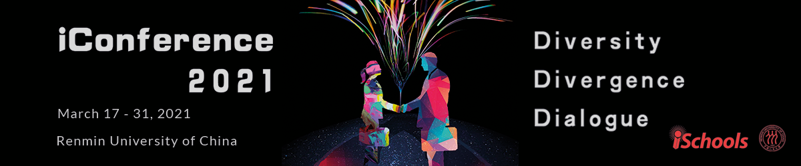

1st Workshop on AI + Informetrics (AII2021) at the iConference2021, Virtual, March 17

News: Since AII Workshop is hosted by iConference2021, at least one author per paper must register, see instructions here <https://www.ischools.org/Registration>.
Keynote by Prof. Ying Ding (School of Information, University of Texas at Austin): AI and Science of Science.
Keynote by Dr. Kevin Boyack (SciTech Strategies): Global Models of Science and Their Applications.
News : The organizing committee of the AI+Informetrics Workshop 2021 is aware that it is a challenging time due to the global COVID-19 pandemics. Aiming to provide a convenient time for the community to conduct high-quality research, we have decided to extend the deadline for submission to: February 20th, 2021 (ANY TIMEZONE on earth).
Accepted Papers
The following 17 papers have been accepted and will be presented at AII2021 on March 17,2021.
Long Presentation (15*5 mins)
- Xin An, Xin Sun and Shuo Xu. Important Citations Identification with Semi-supervised Classification Model
- Sha Yuan, Zhou Shao, Yu Zhang, Tong Xiao and Yifan Wang. Attention: to Better Stand on the Shoulders of Giants.
- Lu Huang, Xingxing Ni, Xiang Chen and Yi Zhang. Measuring Interdisciplinary Interactions Using Citation Analysis and Semantic Analysis.
- Bolin Hua and Youngkug Shin. Extraction of Originative Sentence from Conclusion in Academic Papers.
- Xin Zhang, Yi Wen and Haiyun Xu. Research on Heterogeneous Enhanced Network Embedding for Cooperation Prediction.
Short Presentation (10*12 mins)
- Asta Bäck, Arash Hajikhani and Arho Suominen. Text Mining on Job Advertisement Data: Systematic Process for Detecting Artificial Intelligence Related Jobs.
- Zekun Deng, Zixin Zeng, Weiye Gu, Jiawen Ji and Bolin Hua. Automatic Related Work Section Generation by Sentence Extraction and Reordering.
- Xiaowen Xi, Ying Guo and Weiyu Duan. Recommendation of Academic Collaborators: A Methodology Incorporating Word Embedding and Network Embedding.
- Shiyun Wang, Jin Mao and Hao Xie. Automatic Identification and Classification of Integrated Knowledge Content in an Interdisciplinary Field: A Case Study on eHealth.
- Jaeyoung Choi, Chaeeun Han, Heeyoon Yang, Yeonkyoung Hong, Seoyoung Jeon and Yongjun Zhu. Embedding-based Neural Network Models for Book Recommendation in University Librarie.
- Xuefeng Wang, Shuo Zhang and Yuqin Liu. ITGInsight — Discovering and Visualizing Science, Technology and Innovation Information for Generating Competitive Technological Intelligence.
- Jingwen Luo, Fang Zou, Yujie Peng and Ying Huang. Emerging Technology Opportunity Identification Based on Community Detection and Burst Detection: A Case study of Intelligent Robots.
- Hongshu Chen and Xinna Song. Collaboration and Knowledge Networks: a Framework on Analyzing Evolution of University-industry Collaborative Innovation.
- Chuan Jiang, Dongbo Wang, Si Shen, Wenhao Ye and Jiangfeng Liu. Building the Extraction Model of the Software Entities from Full-Text of Research Articles Based on BERT.
- Ruiyuan Li, Pin Tian and Shenghui Wang. Study Concept Drift in 150-year English Literature.
- Arash Hajikhani and Arho Suominen. The Interrelation of Sustainable Development Goals in Publications and Patents: A Machine Learning Approach.
- Junwan Liu and Rui Wang. Research Performance Prediction for Scientists Using LSTM Neural Networks.
Purpose of the Workshop
Driven by the big data boom, informetrics, known as the study of quantitative aspects of information, has gained great benefits from artificial intelligence (Nilsson 1998) – including a wide range of intelligent agents through techniques such as neural networks, genetic programming, computer vision, heuristic search, knowledge representation and reasoning, Bayes network, planning and language understanding. With its capacities in analyzing unstructured scalable data and streams, understanding uncertain semantics, and developing robust and repeatable models, “Artificial Intelligence + Informetrics” has demonstrated enormous success in turning big data into big value and impact by handling diverse challenges raised from multiple disciplines and research areas. For example, bibliometric-enhanced information retrieval (Mayr et al., 2014), science mapping with topic models (Suominen and Toivanen, 2016), streaming data analytics for tracking technological change (Zhang et al., 2017), and entity extraction with unsupervised machine learning techniques (Zhang and Zhang, 2019). Such endeavours with broadened perspectives from machine intelligence would portend far-reaching implications for science (Fortunato et al., 2018), but how to effectively cohere the power of AI and informetrics to create cross-disciplinary solutions is still elusive from neither theoretical nor practical perspectives.
This workshop is to gather researchers and practical users to open a collaborative platform for exchanging ideas, sharing pilot studies, and scoping future directions on this cutting-edge venue. We highlight “AI + Informetrics” as endeavors in constructing fundamental theories, developing novel methodologies, bridging conceptual knowledge with practical uses, and creating real-word solutions. Specific examples of fields of interest include:
- Informetrics with machine learning (including deep learning)
- Informetrics with natural language processing or computational linguistics
- Informetrics with computer vision
- Informetrics with other related AI techniques (e.g., information retrieval)
- AI for science of science
- AI for science, technology, & innovation
- AI for research policy and strategic management
- Applications of AI-enhanced informetrics
Programme
1st Keynote: AI and Science of Science
Abstract: Artificial Intelligence (AI) has fundamentally changed every aspect of our lives. In AI, the half life of a paper could be less than one year which means that new algorithms have been developed and become out of date within just one year, sometimes could be just few months. Computer vision leads the newly development of fansinating AI algorithms, which are then diffused to natural language processing and graph mining. AI has challenged our understandings of collaboration, knoweldge diffusion, and even citing behavior. The new concepts of human-machine teaming, cognitive computing in knowledge diffusion, citing future rather past are all happening right now at the AI era. This talk will highlight several research practices and share the thoughts about the current and future of AI and Science of Science.
 Dr. Ying Ding is Bill & Lewis Suit Professor at School of Information, University of Texas at Austin. Before that, she was a professor and director of graduate studies for data science program at School of Informatics, Computing, and Engineering at Indiana University. She has led the effort to develop the online data science graduate program for Indiana University. She also worked as a senior researcher at Department of Computer Science, University of Innsburck (Austria) and Free University of Amsterdam (the Netherlands). She has been involved in various NIH, NSF and European-Union funded projects. She has published 240+ papers in journals, conferences, and workshops, and served as the program committee member for 200+ international conferences. She is the co-editor of book series called Semantic Web Synthesis by Morgan & Claypool publisher, the co-editor-in-chief for Data Intelligence published by MIT Press and Chinese Academy of Sciences, and serves as the editorial board member for several top journals in Information Science and Semantic Web. She is the co-founder of Data2Discovery company advancing cutting edge AI technologies in drug discovery and healthcare. Her current research interests include data-driven science of science, AI in healthcare, Semantic Web, knowledge graph, data science, scholarly communication, and the application of Web technologies.
Dr. Ying Ding is Bill & Lewis Suit Professor at School of Information, University of Texas at Austin. Before that, she was a professor and director of graduate studies for data science program at School of Informatics, Computing, and Engineering at Indiana University. She has led the effort to develop the online data science graduate program for Indiana University. She also worked as a senior researcher at Department of Computer Science, University of Innsburck (Austria) and Free University of Amsterdam (the Netherlands). She has been involved in various NIH, NSF and European-Union funded projects. She has published 240+ papers in journals, conferences, and workshops, and served as the program committee member for 200+ international conferences. She is the co-editor of book series called Semantic Web Synthesis by Morgan & Claypool publisher, the co-editor-in-chief for Data Intelligence published by MIT Press and Chinese Academy of Sciences, and serves as the editorial board member for several top journals in Information Science and Semantic Web. She is the co-founder of Data2Discovery company advancing cutting edge AI technologies in drug discovery and healthcare. Her current research interests include data-driven science of science, AI in healthcare, Semantic Web, knowledge graph, data science, scholarly communication, and the application of Web technologies.
2nd Keynote: Global Models of Science and Their Applications
Abstract:
Dr. Kevin Boyack.
Sessions
The workshop will be held on March 17, 2021 (Beijing Time), and specific activities include keynotes, paper presentations session.
- TBD.
Call for Papers
You are invited to participate in the 1st Workshop on AI + Informetrics (AII2021) to be held as a virtual event as part of the iConference2021, Virtual, on March 28-31, 2021. See CFP via: https://easychair.org/cfp/AII2021.
Submission Guidelines
All papers should be submitted as PDF files to EasyChair. All papers must be original and not simultaneously submitted to another journal or conference. The following paper categories are welcome:
Regular Papers
All submissions must be written in English, following Springer’s prescribed LNCS template. and should be submitted as PDF files to EasyChair.
We accept two types Regular Papers:
- Full Research Papers: Up to 6,000 words, excluding references.
- Short Research Papers: Up to 3,000 words, excluding references.
Posters/Demo
We welcome submissions detailing original, early findings, works in progress and industrial applications of “artificial intelligence + informetrics” for a special poster/demo session, possibly with a 3-minute presentation in the main session. Poster/demo submissions should be vivid, with brief textual descriptions.
All poster/domo abstracts must follow Springer’s prescribed LNCS template. Abstracts can be up to 2,500 words in length (excluding references). Abstracts must be fully anonymized.
Submit a paper
Important Dates
All dates are Anywhere on Earth (AoE).
Submission deadline: Feb 20, 2021
Notification date: Mar 3, 2021
Final camera-ready versions due: Mar 15, 2021
Workshop: Mar 17, 2021
Review Process & Proceedings
All submissions will be reviewed by at least two independent reviewers. Please be aware of the fact that once the paper is accepted, at least one author per paper needs to register for the workshop and attend the workshop to present the work. In light of the recent events regarding the Coronavirus, AII2021 will be an all-virtual workshop as iConference will be online only.
Workshop proceedings will be deposited online in the CEUR workshop proceedings publication service. This way the proceedings will be permanently available and citable (digital persistent identifiers and long-term preservation).
Special Issue
Accepted submissions will be invited to submit to our special issue in Scientometrics.
Organising Committee
 Yi Zhang (yi.zhang@uts.edu.au) is a Lecturer at the Centre for Artificial Intelligence, Faculty of Engineering and Information Technology, University of Technology Sydney (UTS), Australia. He received dual PhD degrees, one from Beijing Institute of Technology, China and the other from UTS. He has authored more than 50 publications. His current research interests align with bibliometrics, text analytics, and information systems. He serves as diverse roles (e.g., Associate Editor, Editorial Board Member, and Managing Guest Editor) for one IEEE Trans and four other international journals. He is also a PC Member of several international conferences. (https://www.uts.edu.au/staff/yi.zhang)
Yi Zhang (yi.zhang@uts.edu.au) is a Lecturer at the Centre for Artificial Intelligence, Faculty of Engineering and Information Technology, University of Technology Sydney (UTS), Australia. He received dual PhD degrees, one from Beijing Institute of Technology, China and the other from UTS. He has authored more than 50 publications. His current research interests align with bibliometrics, text analytics, and information systems. He serves as diverse roles (e.g., Associate Editor, Editorial Board Member, and Managing Guest Editor) for one IEEE Trans and four other international journals. He is also a PC Member of several international conferences. (https://www.uts.edu.au/staff/yi.zhang)
 Chengzhi Zhang (zhangcz@njust.edu.cn) is a professor of Department of Information Management, Nanjing University of Science and Technology, China. He received his PhD degree of Information Science from Nanjing University, China. He has published more than 100 publications, including JASIST, Aslib JIM, JOI, OIR, SCIM, ACL, NAACL, etc. His current research interests include scientific text mining, knowledge entity extraction and evaluation, social media mining. He serves as Editorial Board Member and Managing Guest Editor for 10 international journals (Patterns, OIR, TEL, IDD, NLE, JDIS, DIM, DI, etc.) and PC members of several international conferences in fields of natural language process and scientometrics. (https://chengzhizhang.github.io/)
Chengzhi Zhang (zhangcz@njust.edu.cn) is a professor of Department of Information Management, Nanjing University of Science and Technology, China. He received his PhD degree of Information Science from Nanjing University, China. He has published more than 100 publications, including JASIST, Aslib JIM, JOI, OIR, SCIM, ACL, NAACL, etc. His current research interests include scientific text mining, knowledge entity extraction and evaluation, social media mining. He serves as Editorial Board Member and Managing Guest Editor for 10 international journals (Patterns, OIR, TEL, IDD, NLE, JDIS, DIM, DI, etc.) and PC members of several international conferences in fields of natural language process and scientometrics. (https://chengzhizhang.github.io/)
 Philipp Mayr ( philipp.mayr@gesis.org) is a team leader at the GESIS - Leibniz-Institute for the Social Sciences department Knowledge Technologies for the Social Sciences (WTS). He received his PhD in applied informetrics and information retrieval from the Berlin School of Library and Information Science at Humboldt University Berlin. He has published in top conferences and prestigious journals in the areas informetrics, information retrieval and digital libraries. His research group focuses on methods and techniques for interactive information retrieval and data set search. He was the main organizer of the BIR workshops at ECIR 2014-2020 and the BIRNDL workshops at JCDL 2016 and SIGIR 2017-2019. (https://philippmayr.github.io/)
Philipp Mayr ( philipp.mayr@gesis.org) is a team leader at the GESIS - Leibniz-Institute for the Social Sciences department Knowledge Technologies for the Social Sciences (WTS). He received his PhD in applied informetrics and information retrieval from the Berlin School of Library and Information Science at Humboldt University Berlin. He has published in top conferences and prestigious journals in the areas informetrics, information retrieval and digital libraries. His research group focuses on methods and techniques for interactive information retrieval and data set search. He was the main organizer of the BIR workshops at ECIR 2014-2020 and the BIRNDL workshops at JCDL 2016 and SIGIR 2017-2019. (https://philippmayr.github.io/)
 Arho Suominen (Arho.Suominen@vtt.fi) is Principal Scientist at the VTT Technical Research Centre of Finland and Industrial professor at Tampere University (Finland). Dr. Suominen’s research focuses on qualitative and quantitative assessment of innovation systems with a special focus on quantitative methods. His prior research has been funded by the European Commission via H2020, Academy of Finland, Finnish Funding Agency for Technology, Turku University Foundation and the Fulbright Center Finland. Through the Fulbright program, he worked as Visiting Scholar at the School of Public Policy at the Georgia Institute of Technology. Dr. Suominen has a Doctor of Science (Tech.) degree from the University of Turku and holds an Officers basic degree from the National Defence University of Finland. (https://cris.vtt.fi/en/persons/arho-suominen)
Arho Suominen (Arho.Suominen@vtt.fi) is Principal Scientist at the VTT Technical Research Centre of Finland and Industrial professor at Tampere University (Finland). Dr. Suominen’s research focuses on qualitative and quantitative assessment of innovation systems with a special focus on quantitative methods. His prior research has been funded by the European Commission via H2020, Academy of Finland, Finnish Funding Agency for Technology, Turku University Foundation and the Fulbright Center Finland. Through the Fulbright program, he worked as Visiting Scholar at the School of Public Policy at the Georgia Institute of Technology. Dr. Suominen has a Doctor of Science (Tech.) degree from the University of Turku and holds an Officers basic degree from the National Defence University of Finland. (https://cris.vtt.fi/en/persons/arho-suominen)
All questions about submissions should be emailed to Organizing Committee.
Programme Committee
- Alireza Abbasi, UNSW Canberra
- Andrea Scharnhorst, DANS-KNAW
- Bart Thijs, ECOOM, MSI, K.U.Leuven
- Chao Min, Nanjing University
- Chao Lu, Hohai University
- Dietmar Wolfram, University of Wisconsin-Milwaukee
- Dongbo Wang, Nanjing Argricultural University
- Guillaume Cabanac, IRIT - Université Paul Sabatier Toulouse 3
- Haihua Chen, University of North Texas
- Hongshu Chen, Beijing Institute of Technology
- Iana Atanassova, CRIT, Université de Bourgogne Franche-Comté
- Jian Xu, Sun Yat-sen university
- Jian Du, Peking University
- Jin Mao, Wuhan University
- Kai Li, Renmin University of China
- Marc Bertin, Université Claude Bernard Lyon 1
- Mengjia Wu, University of Technolog Sydney
- Philipp Schaer, TH Köln (University of Applied Sciences)
- Qingqing Zhou, Nanjing Normal University
- Shuo Xu, Beijing University of Technology
- Vivek Kumar Singh, Banaras Hindu University, Varanasi, U.P.,India
- Wu Xiaolan, Nanjing Normal University
- Xuefeng Wang, Beijing Institute of Technology
- Ying Guo, China University of Political Science and Law
- Ying Huang, Wuhan University
- Yingyi Zhang, Nanjing University of Science and Technology
- Yuzhuo Wang, Nanjing University of Science and Technology
- Yuya Kajikawa, Tokyo University of Technology
Website
https://ai-informetrics.github.io/
References
- Fortunato, S., et al., 2018. Science of science. Science, 359(6379).
- Nilsson, N.J., 1998. Artificial intelligence: A new synthesis. Morgan Kaufmann.
- Mayr, P., et al., 2014, April. Bibliometric-enhanced information retrieval. In European Conference on Information Retrieval (pp. 798-801). Springer, Cham.
- Suominen, A. and Toivanen, H., 2016. Map of science with topic modeling: Comparison of unsupervised learning and human‐assigned subject classification. Journal of the Association for Information Science and Technology, 67(10), pp.2464-2476.
- Zhang, Y. and Zhang, C., 2019. Unsupervised keyphrase extraction in academic publications using human attention. 17th International Conference on Scientometrics and Informetrics (ISSI 2019), Rome, Italy.
- Zhang, Y., et al., 2017. Scientific evolutionary pathways: Identifying and visualizing relationships for scientific topics. Journal of the Association for Information Science and Technology, 68(8), pp.1925-1939.
Links
Related Workshops：
BIRNDL 2019：The 4th Joint Workshop on Bibliometric-enhanced Information Retrieval and Natural Language Processing for Digital Libraries
Venue: SIGIR 2019 in Paris, France
Proceedings: http://ceur-ws.org/Vol-2414/
SDP 2020：First Workshop on Scholarly Document Processing
Venue: 2020 Conference on Empirical Methods in Natural LanguageProcessing (EMNLP 2020)
Website: https://ornlcda.github.io/SDProc/
EEKE 2020：First Workshop on Extraction and Evaluation of Knowledge Entities from Scientific Documents
Venue: ACM/IEEE Joint Conference on Digital Libraries 2020 (JCDL2020)
Website: https://eeke2020.github.io/